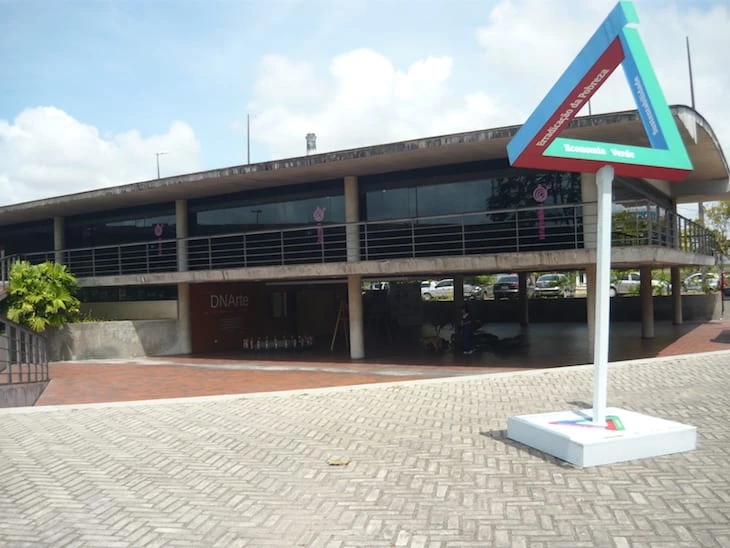
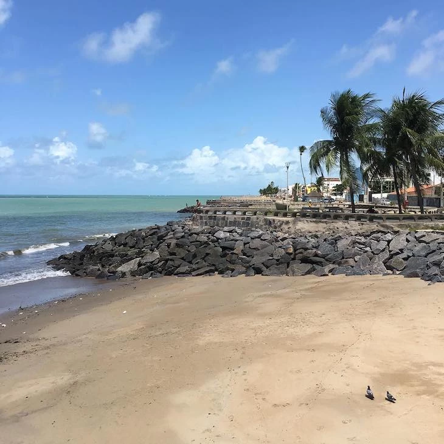
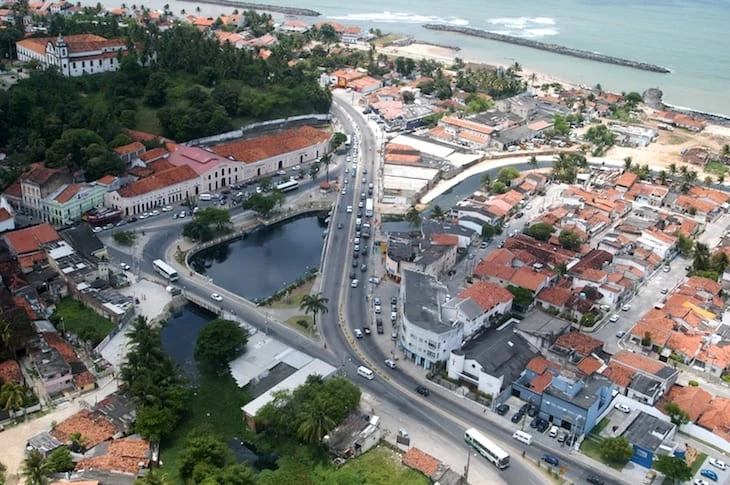
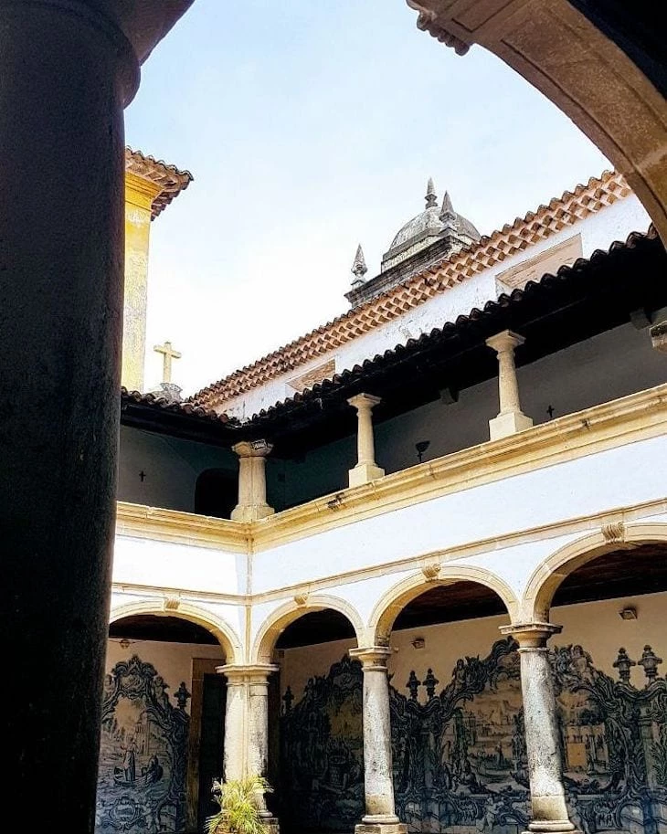

Espaço Ciência Pernambuco
Criado em 1994, este museu interativo fica no Parque Memorial Arcoverde e atrai visitantes que adoram uma curiosidade. No local, há um simulador de raios, uma caixa de areia interativa representando acidentes geográficos, entre outras atrações que sempre se renovam. A entrada é gratuita.
Praia do Bairro Novo
A praia mais conhecida da cidade possui uma vasta faixa de areia que abriga os inúmeros turistas que por lá passam na alta temporada. O mar calmo com água cristalina é um dos motivos que justifica a sua popularidade.
Largo do Varadouro
Localizado no Polígono Tombado do Sítio Histórico de Olinda, O Largo do Varadouro já foi um porto de galeotas que traziam as mercadorias do Porto de Pernambuco para Olinda, e hoje recebe eventos e atividades culturais e recreativas da cidade, principalmente no carnaval.
Convento de São Francisco
CConstruído em 1585, este é o convento franciscano mais antigo do Brasil. Suas paredes decoradas com azulejos portugueses do século XVIII é o que mais atrai os turistas, e claro, as igrejas anexas ao local, como a Igreja Nossa Senhora das Neves, Capela de Sant’Ana e a Capela de São Roque. Um local carregado de história!